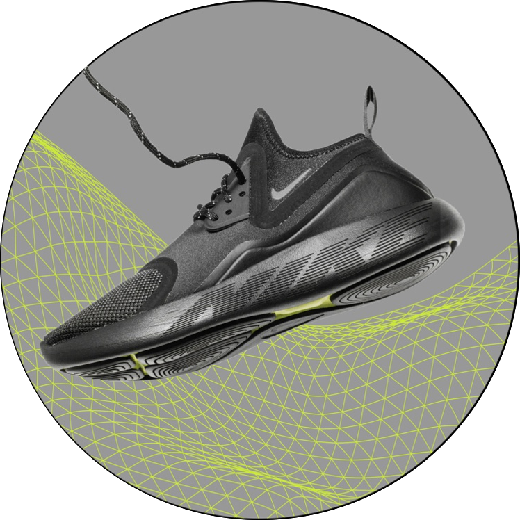

© NIKE SHOES
FOAMCORE
LIGHTWEIGHT
© REACT PLATFORM
NIKE REACT
FOAM DELIVERS
AN EXPRESSIVE LOOK
THE NEW
REACT
PRESTO PUTS
A FRESH SPIN
(01)95012345678903(3103)000123
THE SPIRIT OF THE ORIGINAL NIKE PRESTO WAS ABOUT EXPRESSING YOURSELF AND CREATING A SEAMLESS FEEL BETWEEN FOOT AND FOOTWEAR.
INSPIRED BY THE EARLY 2000S ORIGINAL, THE NIKE PRESTO REACT PUTS AN EXAGGERATED SPIN ON AN UNCONVENTIONAL ICON. NIKE REACT FOAM DELIVERS AN EXPRESSIVE LOOK WITH A LIGHTWEIGHT, BOUNCY FEEL AND A WHOLE LOT OF PERSONALITY.